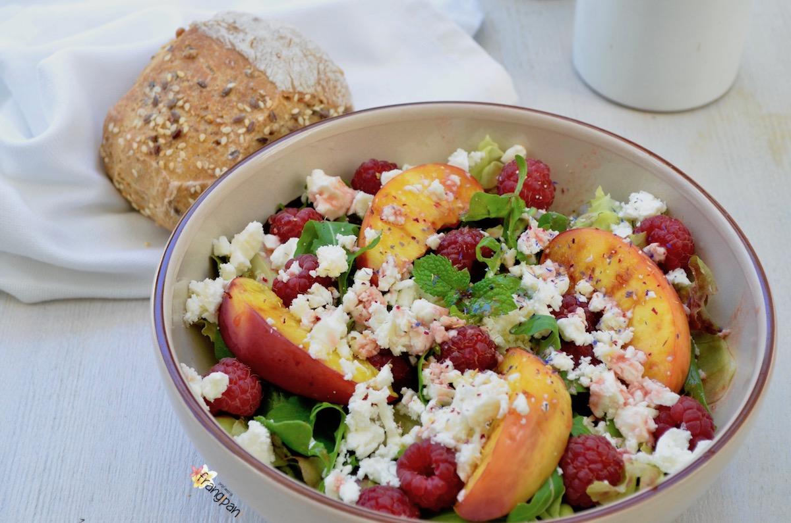
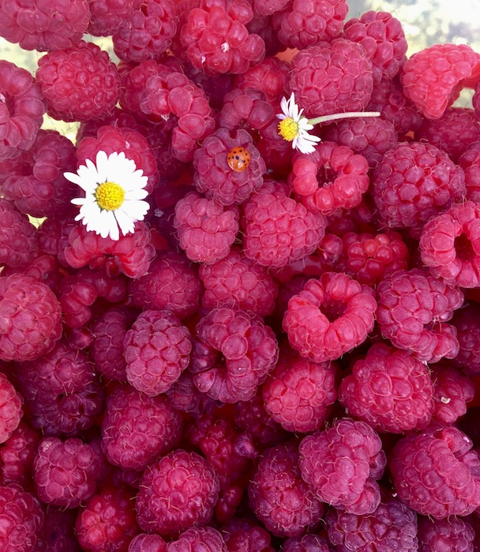
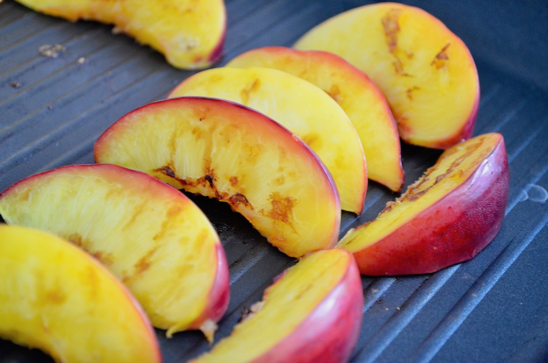
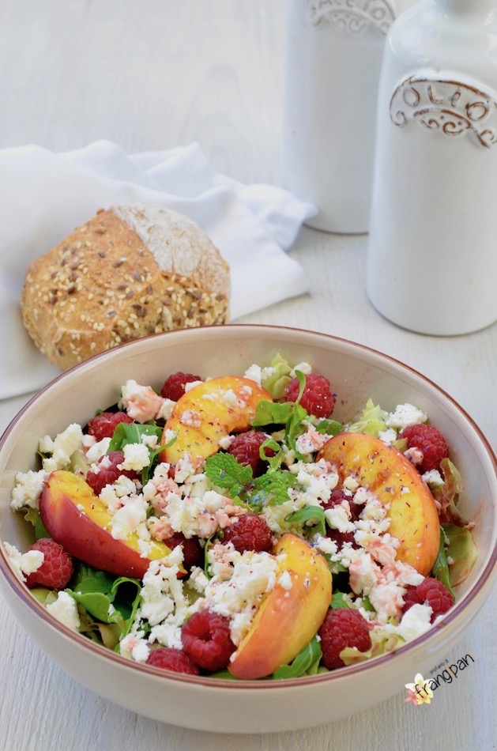
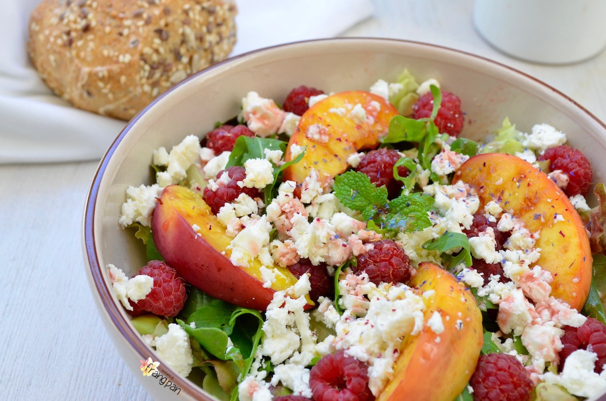
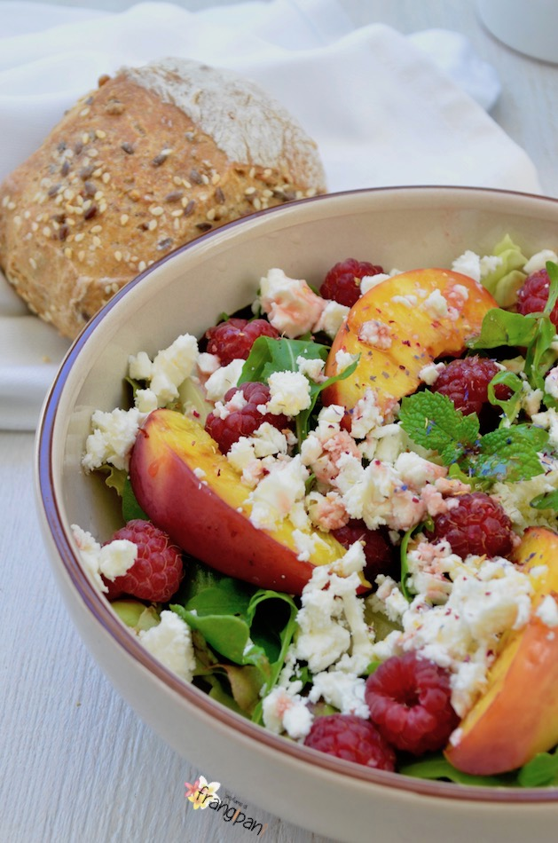
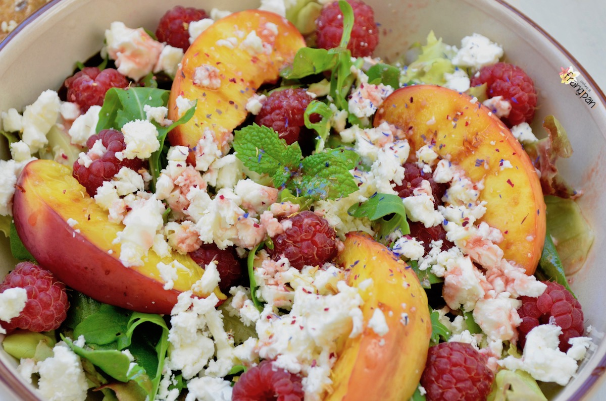

Benvenuto Agosto e buon 1° Agosto Svizzera!
Era già da un pezzo che avevo intensione di fare questa insalata con pesche, lamponi e feta. Ma per fare questa insalata avevo bisogno di due cose fondamentali: pesche gialle belle dolci e lamponi raccolti da noi. Nelle nostre vicinanze c'è un contadino dove si possono raccogliere diverse cose... verso maggio/giugno ci sono le fragole e vi assicuro che sono le migliori, poi verso luglio arrivano i lamponi. Vendono anche le ciliegie e le prugne più buone che io abbia mai mangiato! Cerciamo di andare a raccogliere i lamponi ogni anno. Una parte la trasformo in marmellata, una parte la congelo e con quello che rimane faccio il mio dolce preferito, la crostata di lamponi. È inutile con i lamponi freschi è molto più buona! Solo che quest'anno i lamponi non erano proprio bellissimi e dolcissimi. Erano piccoli piccoli e si sbriciolavano. Strano... non so se anche loro hanno sofferto la gelata di fine aprile, perché anche nel nostro giardino non stanno crescendo... Nostra figlia si è divertita un sacco a raccoglierli, le abbiamo dato una coppetta tutta sua e ogni tanto ne raccoglieva uno, ma ovviamente la gran parte l'ha mangiata! Il piccolo invece era più interessato alle api e quando ho trovato un lampone con sopra una coccinella sono impazziti! Mio figlio gli chiedeva pure: "Cuccinella, come stai? Guarda ti regalo un fiore..." e a posato accanto la coccinella una piccola margherita! Mi ha fatto una tenerezza... poi anche mia figlia ha preso un fiore!

Ecco, non mancava più niente per preparare questa bella insalatona. Ed è proprio un'insalatona, perché dopo un bel piatto di questa siete sazi senza sentirvi appesantiti però. Penso che la rifarò, anche perché spero fortemente che l'estate duri ancora un bel po'!
| insalata a piacere |
| rucola |
| pesche |
| lamponi |
| formaggio Feta |
| menta fresca |
| sale |
| olio evo |
| aceto di lamponi o aceto balsamico |
Preparazione
Lavate bene tutta l'insalata, la rucola, i lamponi e le pesche. Dunque tagliate le pesche ottenendo tanti spicchi. Riscaldate una padella griglia e a temperatura moderata arrostite da entrambe le parti gli spicchi di pesca. Poi metteteli in un piattino e fateli raffreddare leggermente.

Adesso preparate il tutto: Prendete l'insalata e spezzetatela con le mani, aggiungete anche la rucola ed i lamponi. Adagiateci sopra anche gli spicchi di pesca arrostiti, distribuite anche qualche fogliolina di menta spezzettata e sbriciolate su tutto il formaggio Feta. Per finire condite con sale, olio e aceto di lamponi o aceto balsamico.



